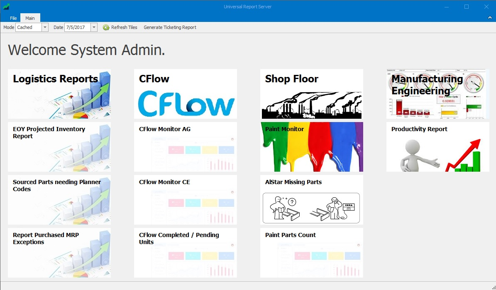
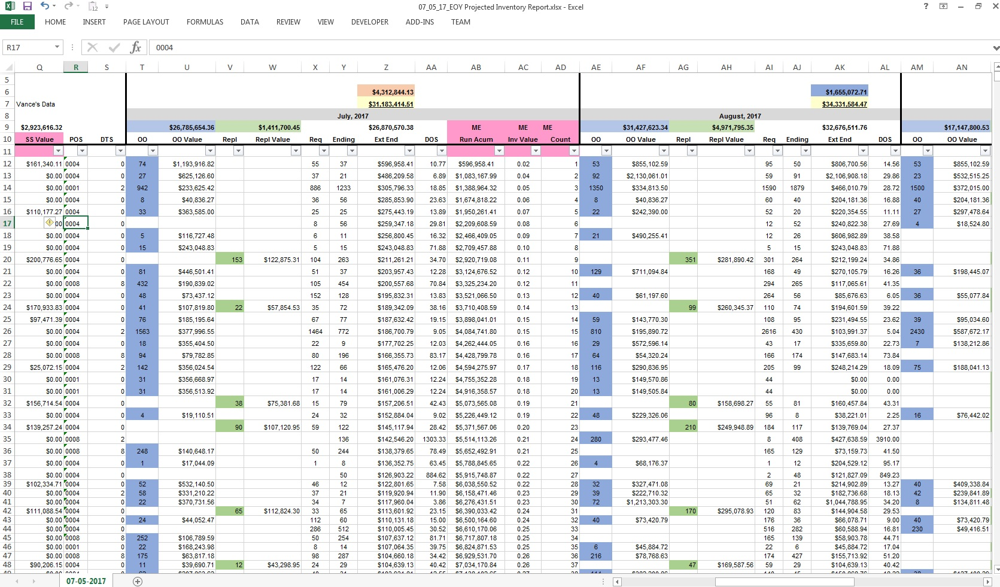
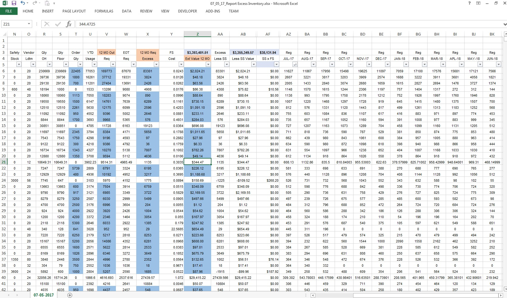
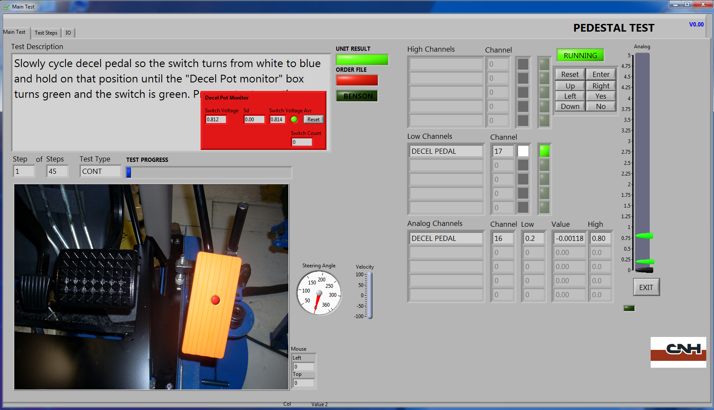
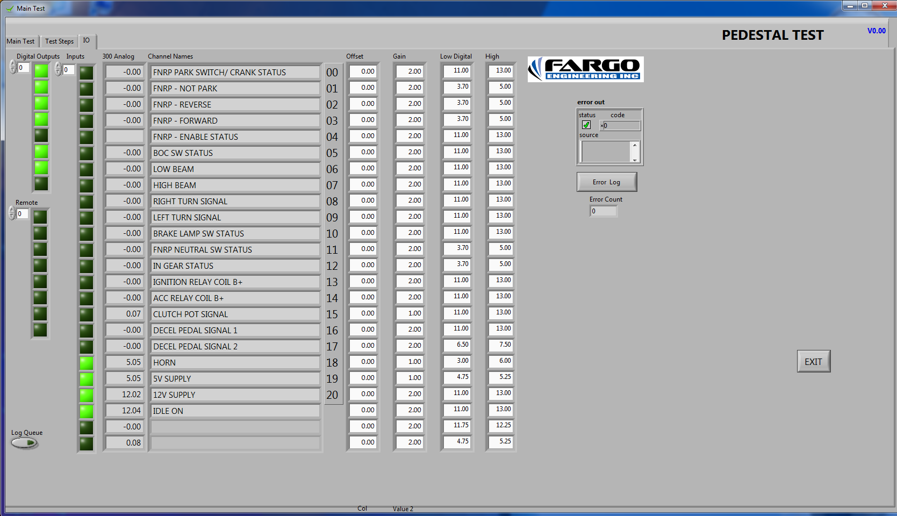
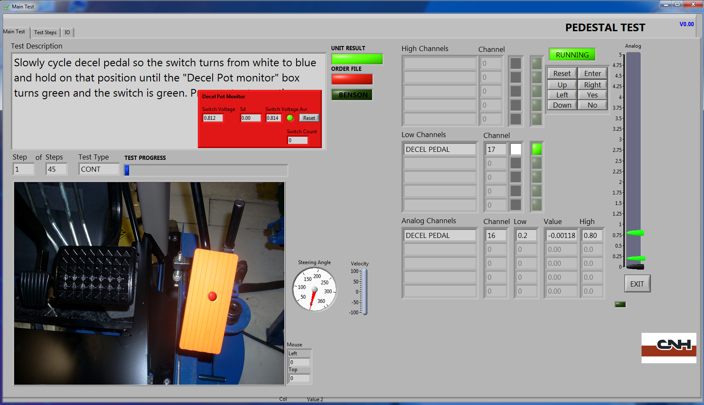
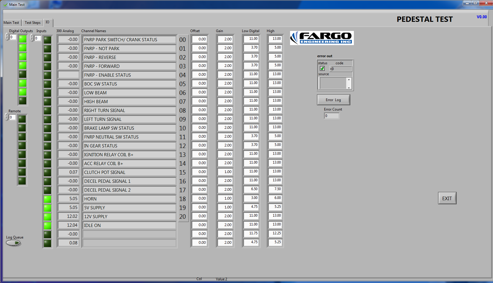
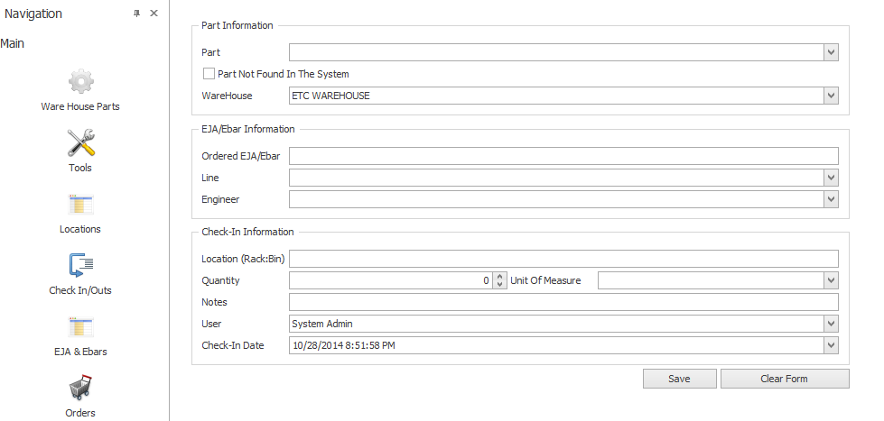
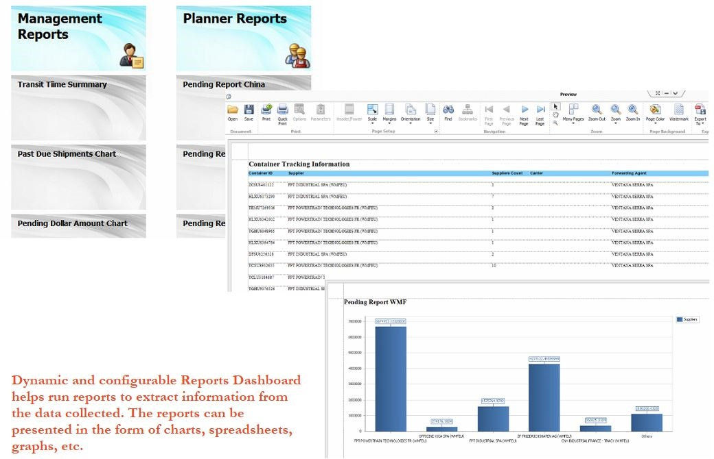

Universal Report Server
Universal Report Server(URS) contains all types of reports that any user might need and is available to all the users with configurable access. Users can access reports for current day, can generate dashboards on live data and can retrieve historical reports very quickly. All the reports are grouped based on the system/process and users can be configured at group level or at report level. URS contains Excel Reports, Dashboards, Devexpress XAF Reports and much more.
CFlow


CFLow is the process of tracking parts based on weldments and operations for each order. CFlow holds information regarding all the loss details, loss categories, rework details and helps clients to identify the root cause for each loss. Operators use tablet application in order to track the part number and operation processed at that time. Couple of waterfall designs show how many orders are done and shows the current progress. At any point of time, users can access both live data and historical data for reference.
Universal Testing System


Universal Test System(UTS) is used to test new cab functionalities as part of next model change. We designed a test system that is configurable enough for any cab with monir changes in order to test easily. In UTS, we configure Tests, Sub Tests, Signals, ECUs and Stations which collects data from the CAB and highlights if the tests fail.
Logistics
 Logistics group needs all kinds of reports like Inventory details, Requirement Details, MRP Exception details etc, every day. We import all the required data every day, using Integration Services (SSIS) from multiple sources to generate these reports. All the reports are available in URS and it will take no longer than 2 seconds for them to open the required report. Listed above are couple of examples, 1st one is the EOY(End Of Year) report that shows the project inventory values for current month along with next 4 months based on the requirements. 2nd one shows the excess inventory that plant has for selected date along with the future requirements captured for one year.
Pedestal
 



Pedestal Test cell is a customized version of our universal test platform. It's written in Labview and was developed to test Agricultural steering column assemblies in a production environment. The test system has a Compact Daq chassis from National Instruments and also uses CAN based communication to facilitate some tests. The system is driven off of order number and tests options specific to each model.
PID
Parts Inventory Database (PID) is a comprehensive inventory management system with real time usage updates. The front-end provides users with an intuitive GUI to keep track of usage and schedule orders for out of stock items. The mobile clients, running on tablets, smart phones, etc., are used to search for items and check-in/check-out. Every transaction is recorded with all the relevant details.
PFP
Planning For Parts (PFP) is a one stop solution for tracking shipments and to keep up with the manufacturing process requirements. Information is collected daily from different sources including files in various formats, remote databases, Share Point websites, email attachments, etc. and compiled in a relational and secure database. Planners can use the intuitive GUI along with custom tools and reports to research, identify and predict problems/delays.
"Fargo Engineering has been a pleasure to work with. Their employees have surpassed my expectations. Every issue we have encountered has had a quick resolution. They have helped me expand my ideas of what are possible. Never seems to be a limit of what can be done. I have appreciated their patience in working with me. Look forward to having more opportunities to work with them." - Lynn Larson, FTZ Operator, CNH Fargo